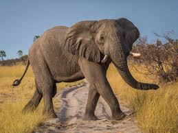

A de Abeja

B de Ballena
C de Cangrejo
D de Delfín

E de Elefante
F de Foca

G de Gato
H de Hámster
I de Iguana
J de Jirafa
K de Koala

L de León
M de Mono

N de Nutria

Ñ de Ñandú

O de Oso

P de Perro

Q de Quetzal

R de Rana
S de Serpiente

T de Tigre

U de Urraca

V de Vaca
W de Wombat
X de Xoloitzcuintle

Y de Yak

Z de Zorro